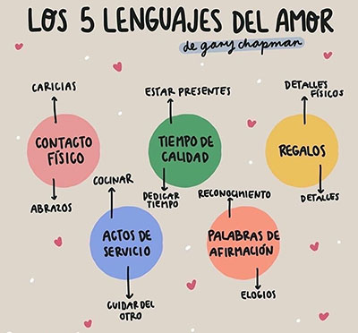

A menudo, en el ámbito privado, las personas comentamos los diversos problemas que experimentamos en pareja. Unos problemas son más perceptibles (como las discusiones en las tomas de decisiones, manías individuales no compartidas, etc.) que otros, los cuáles pasan más desapercibidos. Es el caso del tipo de problemática que vamos a exponer a continuación.
| Lenguajes del amor | |
| Palabras | Halagos, palabras de ánimo... |
| Tiempo de calidad | Dar un paseo, salir solos... |
| Regalos | Dar regalos, estar disponible... |
| Actos de servicio | Ayudar en el hogar(Lavar platos, cocinar...) |
| Contacto físico | Abrazos, caricias... |
Los 5 lenguajes del amor: preferencias modales para demostrar y recibir amor
Según Chapman (2009), existen 5 lenguajes del amor. Estos pueden ser muy importantes para que la relación mejore sustancialmente, ya no solo en pareja, sino entre amigos, compañeros o familia. Chapman destaca que cada persona tiende a expresar su amor y prefiere recibirlo de maneras concretas.